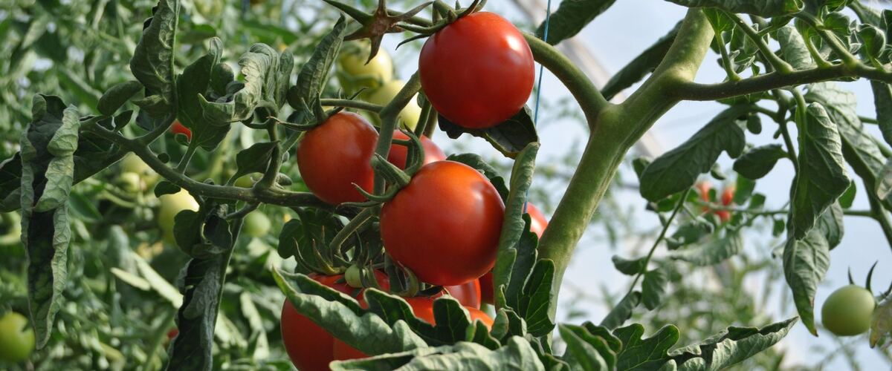
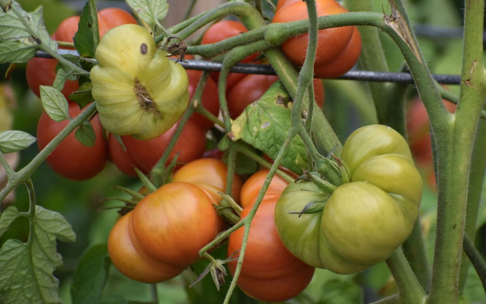

Plant guides · Oregon · Washington · Idaho
The Best Tomatoes for Cool Northwest Summers
Big slicers often stay green in a cool Northwest summer. These are the tomatoes that do ripen in Portland, Seattle and on the coast.
Every spring, Northwest garden centers fill up with tomato starts bred for places like California and the Midwest. Many of them will grow beautifully here and then hang green on the vine in September. The problem isn't frost. Portland's typical last spring frost is March 13 and Seattle's is March 2, giving both cities a long frost-free season. The problem is heat. Tomatoes need warm days and, just as important, warm nights to set and ripen fruit, and west of the Cascades summer nights often dip into the low 50s.
The fix is to choose varieties that finish fast and tolerate cool nights, then help them along.
Varieties that ripen reliably
- Stupice. A Czech heirloom with small, flavorful red fruit. It's one of the earliest tomatoes you can grow and keeps producing until fall.
- Early Girl. A dependable hybrid that ripens medium-sized fruit well ahead of most slicers.
- Sungold. An orange cherry tomato that's sweet, early and heavy-yielding. If you only grow one plant, many Northwest gardeners would pick this one.
- Oregon Spring. Bred in Oregon for exactly this climate. It sets fruit in cool weather and ripens early.
- Legend. Another Oregon-bred variety, with large fruit and some resistance to late blight.
Why cool nights are the real problem
It helps to know what a tomato is actually waiting for. The flowers need nights that stay above roughly 55°F to make good pollen and set fruit. Below that, blossoms often drop off without forming a tomato, which is why plants can look healthy and flower all through June and still have almost nothing on them by July. Once fruit has set, the red color develops best when days are in the 70s. A Portland or Seattle summer has plenty of days like that, but the run of warm nights is short, so a variety that needs 85 days from transplant is racing the calendar from the start.
East of the Cascades and in southern Oregon the story flips. Medford, Boise and the Tri-Cities have hot days and warm enough nights for almost any tomato, including big heirloom beefsteaks. There, the risk is more often heat: when days run well into the 90s, plants drop blossoms and fruit can ripen unevenly. The varieties below are chosen for the cooler west side, where they make the biggest difference.
In general, cherry and small salad tomatoes are the safest bets, and big beefsteaks are the riskiest. Look at the "days to maturity" on the tag: under 70 days is a good sign for west-side gardens, and under 60 is better on the coast, where Astoria's summers rarely get truly hot.

Give them every bit of heat you can
- Plant late, not early. Wait until the soil has warmed and nights stay mild. Tomatoes set out in cold April soil just sit and sulk. In Portland that usually means mid-May; see the exact window.
- Use the warmest spot. A south- or west-facing wall stores heat and gives it back at night.
- Warm the soil. Black or red plastic mulch laid a week before planting can raise soil temperature several degrees.
- Protect young plants. Wall-o-water rings or a simple plastic cloche keep nights warmer for the first few weeks.
- Don't overwater late in summer. Easing off water in August encourages plants to ripen what they have.
Determinate or indeterminate?
Seed packets and plant tags usually say one or the other, and in a short season it matters. Determinate (bush) tomatoes grow to a set size, then ripen most of their crop over a few weeks. That's handy on the coast or in a cool year, because the fruit comes in before the weather turns, and it suits canning. Indeterminate (vining) tomatoes keep growing and setting fruit until frost or blight stops them. They give a longer harvest but need tall stakes or cages, and their late fruit often never ripens here. Stupice, Sungold and Early Girl are indeterminate; Oregon Spring and Legend are determinate types bred for this region.
Pruning and topping for a short season
You don't have to prune tomatoes, but on the west side a little pruning helps fruit ripen. On vining types, pinch off some of the side shoots (suckers) that grow in the joint between a leaf and the main stem, especially low on the plant. Fewer stems means more airflow, which also helps against disease, and more of the plant's energy goes into the fruit you already have.
Then, in late August or early September, "top" the plant: cut off the growing tips and any new flower clusters. Flowers that open in September won't have time to become ripe tomatoes before fall rain and cold arrive, and removing them sends the plant's sugar into the green fruit already hanging there.
Beat late blight in a wet fall
When fall rains arrive, late blight can turn leaves and fruit brown almost overnight. Space plants for airflow, water at the base, and in September pinch off new flowers so the plant puts its energy into fruit that can still ripen. If rain sets in with green fruit on the vine, pick it: mature green tomatoes ripen fine on a kitchen counter.
Not every green tomato will ripen indoors, though. A "mature green" fruit has reached full size, has a glossy skin that's starting to turn pale or whitish-green, and when you cut one open the seeds are surrounded by jelly rather than sliced through. Small, hard, dark green fruit usually just shrivels. Keep picked tomatoes at room temperature, out of the fridge and out of direct sun, in a single layer, and check them every few days. They won't taste quite like a vine-ripened August tomato, but they're far better than store-bought in October. Our guide to late blight covers how to spot it and what to do with infected plants.
If your tomatoes didn't ripen this year
Run through the usual causes before you give up. Was the variety rated at more than 75 days? Did plants go out in cold soil in April or early May and stall? Is the spot shaded for part of the afternoon by trees that leafed out after you planted? Did they get a lot of water and fertilizer late in the season, which keeps them growing leaves instead of ripening? Each of those is fixable next year, and fixing two of them usually turns a disappointing year into a good one.
When you're ready, look up tomato planting dates for your town.